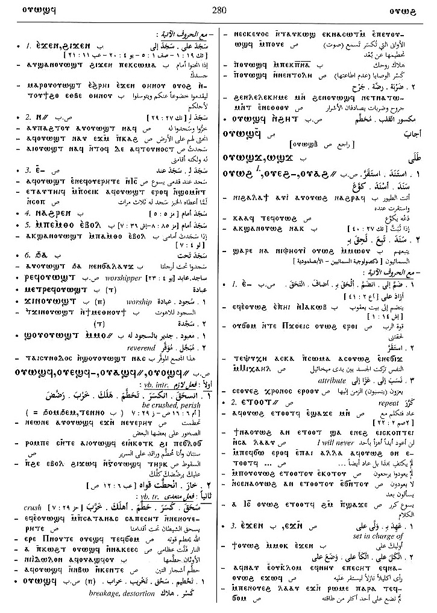
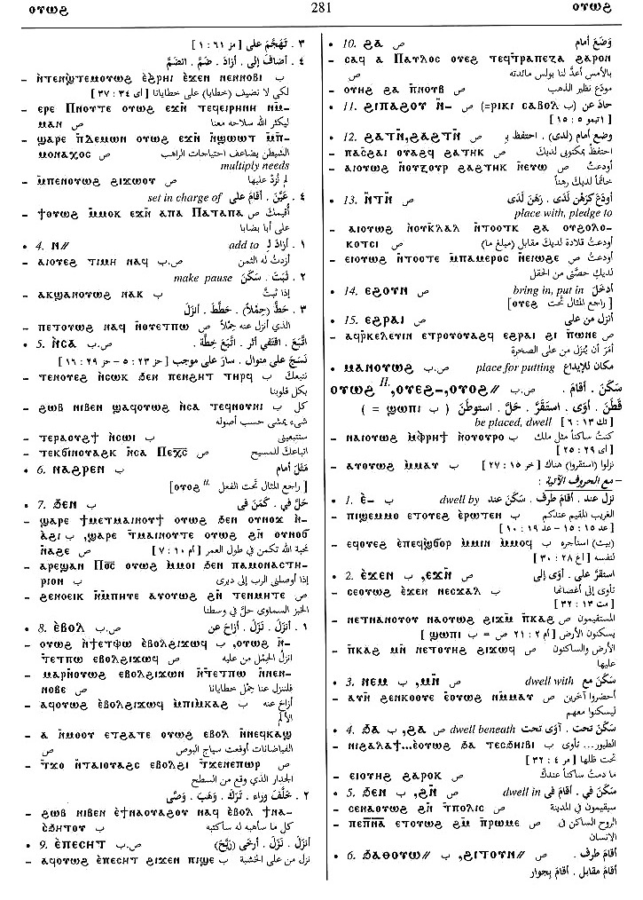

(verb)
put, set, be (there)
― intr: S,B,F
― tr: [επιτιθεναι]
| intr: be placed, dwell [κατοικειν, κατασκηνουν, μενειν]
― intr: S,B,F
― tr: [επιτιθεναι]
| intr: be placed, dwell [κατοικειν, κατασκηνουν, μενειν]
(S, A, sA, B, F)
ⲟⲩⲱϩ
(A) ⲟⲩϩⲱ
(B) ⲟⲩⲟϩ, ⲟⲩⲁϩ
(S, B) ⲟⲩⲉϩ-
(S, A, F) ⲟⲩⲱϩ-
(A, B, F, O) ⲟⲩⲁϩ-
(B) ⲃⲁϩ-
(S, A, sA, B, F) ⲟⲩⲁϩ=
(A) ⲟⲩϩⲁ=
(F) ⲟⲩⲉϩ=
(S, A, sA) ⲟⲩⲏϩ+
(S) ⲟⲩⲏⲏϩ+
(A) ⲟⲩϩⲏ+
(B, F) ⲟⲩⲉϩ+
(S) p c ⲟⲩⲁϩ-
(S) imperative: ⲁⲩⲱ
(A) imperative: ⲁⲟⲩ {for ⲁⲟⲩⲱϩ}
(B) imperative: ⲟⲩⲟϩ
(A) ⲟⲩϩⲱ
(B) ⲟⲩⲟϩ, ⲟⲩⲁϩ
(S, B) ⲟⲩⲉϩ-
(S, A, F) ⲟⲩⲱϩ-
(A, B, F, O) ⲟⲩⲁϩ-
(B) ⲃⲁϩ-
(S, A, sA, B, F) ⲟⲩⲁϩ=
(A) ⲟⲩϩⲁ=
(F) ⲟⲩⲉϩ=
(S, A, sA) ⲟⲩⲏϩ+
(S) ⲟⲩⲏⲏϩ+
(A) ⲟⲩϩⲏ+
(B, F) ⲟⲩⲉϩ+
(S) p c ⲟⲩⲁϩ-
(S) imperative: ⲁⲩⲱ
(A) imperative: ⲁⲟⲩ {for ⲁⲟⲩⲱϩ}
(B) imperative: ⲟⲩⲟϩ
| put, set, be2711 | Crum: 505b | ||||||||
| With following preposition:4970 | |||||||||
| (S, A, B, F) ― ⲉ- | set on, add to4971 | ||||||||
| (S) ― ⲉⲣⲛ- | upon, at4972 | Crum: 506a | |||||||
| (S, A, F) ― ⲉⲧⲛ-, ― ⲉⲧⲟⲟⲧ= | intr = ⲟⲩⲁϩⲧⲟⲧ B, set hand, add, repeat4973 | ||||||||
| (S, A, sA, B, F) ― ⲉϫⲛ- | set upon, add to4974 | ||||||||
| (S, B) ― ⲛ- | add to
ethic dat, set down, make pause4975 |
Crum: 506b | |||||||
| (S, B) ― ⲛⲁϩⲣⲛ- | set before4976 | ||||||||
| (S, A, sA, B, F) ― ⲛⲥⲁ- | put after, follow, mostly refl4977 | ||||||||
| (S) ― ⲛⲧⲛ- | place with, pledge to4978 | ||||||||
| (S) ― ϩⲁ- | lie by, in return for
set, place4979 |
Crum: 507a | |||||||
| (S, A, B) ― ϩⲛ-, ― ϧⲉⲛ- | be set, lie in4980 | ||||||||
| (S) ― ϩⲓⲡⲁϩⲟⲩ ⲛ- | set after, follow4981 | ||||||||
| (B) ― ϩⲓⲣⲉⲛ- | set before4982 | ||||||||
| (S, F) ― ϩⲁⲧⲛ-, ― ϩⲁϩⲧⲛ- | as last4983 | ||||||||
| (S)
― ϩⲓⲧⲟⲩⲛ-
(B) ― ϧⲁⲑⲟⲩⲱ= |
beside4984 | ||||||||
| (S, A, B) ― ϩⲓϫⲛ- | rest, alight upon4985 | ||||||||
| With following adverb:4986 | |||||||||
| (S, B, F) ― ⲉⲃⲟⲗ | intr: S,F, set
down, pause
tr: S, let, bring down4987 |
||||||||
| (S, B, F) ― ⲉⲡⲉⲥⲏⲧ | descend, alight
― intr: ― tr: set down4988 |
Crum: 507b | |||||||
| (S) ― ⲉϩⲟⲩⲛ | put, bring in4989 | ||||||||
| (S, F) ― ⲉϩⲣⲁⲓ | set down4990 | ||||||||
| (S, F) ⲙⲁ ⲛⲟⲩ. | place for putting2712 | ||||||||
| be placed, dwell2713 | |||||||||
| With following preposition:4991 | |||||||||
| (S, B, F) ― ⲉ- | dwell by, with4992 | ||||||||
| (S, sA, B) ― ⲉϫⲛ- | upon4993 | ||||||||
| (S, sA, B) ― ⲙⲛ- | with4994 | Crum: 508a | |||||||
| (S) ― ⲛ- | in4995 | ||||||||
| ― ϩⲁ-, ― ϧⲁ- | beneath4996 | ||||||||
| (S) ― ϩⲓ- | on, in4997 | ||||||||
| (S, A, sA, F) ― ϩⲛ- | in4998 | ||||||||
| (S, A, B, F) ― ϩⲓϫⲛ- | upon4999 | ||||||||
| (S, B) ― (ⲡ) | (noun male)
standing-place, dwelling-place & obscure meanings2714 |
||||||||
| (S, A, B) ⲙⲁ ⲛⲟⲩ. | halting-place, resting-place, dwelling-place [καταλυμα, οικοσ, κατοικια, οικουμενη, δοχειον]2715 | ||||||||
| (S, B) ϭⲓⲛⲟⲩ., ϫⲓⲛⲟⲩ. | act of dwelling, manner of life2716 | Crum: 508b | |||||||
| (S) ⲟⲩⲁϩ (ⲡ) | (noun male)
stave, pole [αναφορευσ]2717 |
||||||||
| (S) ⲟⲩⲁϩϥ (ⲡ) | (noun male)
liturgical functionary, acolyte (?)2718 |
||||||||
Crum: 505,506,507,508

505

506

507

508
Dawoud: 280b-281b,
281b-282a, 242a-243a,
243a

280

281

282

242

243